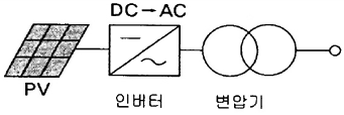
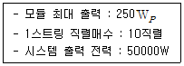
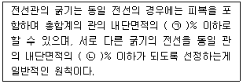
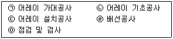

신재생에너지발전설비기사(구) (2015-05-31 기출문제)
1과목: 임의 구분
1. 인버터는 태양전지에서 출력되는 직류전력을 교류전력으로 변환하고 교류계통으로 접속된 부하설비에 전력을 공급하는 기능을 한다. 그림과 같은 인버터 회로방식의 명칭으로 옳은 것은?

- 상용주파 변압기 절연방식
- 고주파 변압기 절연방식
- 트랜스리스 방식
- 트랜스 방식
(정답률: 87%)

2. 인버터 각 시스템 방식 중 PV 분전함이 없어도 되고, PV어레이 근처에 설치되는 인버터 연결방식은?
- 병렬 운전 방식
- 모듈 인버터 방식
- 스트링 인버터 방식
- 중앙 집중형 인버터 방식
(정답률: 54%)
3. 태양전지에서 직렬저항이 발생하는 원인이 아닌 것은?
- 태양전지 내의 누설전류
- 전면 및 후면 금속전극의 저항
- 금속전극과 에미터, 베이스 사이의 접촉저항
- 태양전지의 에미터와 베이스를 통한 전류 흐름
(정답률: 74%)
4. 신·재생에너지에 관한 설명으로 틀린 것은?
- 조력발전은 밀물과 썰물로 발생하는 조류를 이용한 것이다.
- 폐기물에너지는 가연성폐기물에서 발생되는 발열량을 이용한 것이다.
- 파력발전은 표층과 심층의 해수온도차를 이용한 것이다.
- 바이오에너지는 생물자원을 변환시켜 이용하는 것이 있다.
(정답률: 84%)
5. 인버터의 설명으로 틀린 것은?
- PWM 원리로 정현파를 재생한다.
- 무변압기 인버터는 효율이 나쁘다.
- MPPT를 이용한 최대전력을 생산한다.
- 추적효율은 최적 동작점을 조정하는 것이다.
(정답률: 86%)
6. 출력전압의 파형을 기준으로 할 때 독립형 인버터에 해당되지 않는 것은?
- 구형파 인버터
- 유사 사인파 인버터
- 사인파 인버터
- 여현파 인버터
(정답률: 77%)
7. 연료전지의 특징에 대한 설명으로 적합하지 않은 것은?
- 간헐성의 특징에 따른 축전지설비가 필요하다.
- 등유, LNG, 메탄올 등 연료의 다양화가 가능하다.
- 발전소의 건설비용이 크며 수명과 신뢰성향상을 위한 기술연구가 필요하다.
- 다양한 발전 용량의 제작이 가능하다.
(정답률: 70%)
8. 태양전지 측정 STC 조건에 따른 최적의 일사량과 표면온도는?
- 1000W/m2, 25℃
- 1800W/m2, 35℃
- 1500W/m2, 45℃
- 2500W/m2, 55℃
(정답률: 88%)
9. 연(납)축전지의 정격용량 100Ah, 상시부하 8kW, 표준전압 100V인 부동충전 방식 충전기의 2차 전류(충전전류)값은 몇 A 인가? (단, 상시부하의 역률은 1로 한다.)
- 50
- 60
- 80
- 90
(정답률: 36%)
10. 태양전지 모듈을 구성하는 직렬 셀에 음영이 생길 경우 발생하는 출력 저하 및 발열을 억제하기 위해 설치하는 소자는?
- 바이패스 다이오드
- 역전류 방지 다이오드
- 역전류 방지 퓨즈
- 정류 다이오드
(정답률: 88%)
11. 태양광 발전용 축전지의 방전심도에 대한 설명으로 틀린 것은?
- 방전심도를 낮게 설정하면, 전지수명이 증가한다.
- 방전심도를 낮게 설정하면, 잔존용량이 감소한다.
- 방전심도를 깊게 설정하면, 전지 이용률이 증가한다.
- 방전심도를 깊게 설정하면, 전지 수명이 단축된다.
(정답률: 73%)
12. 태양광발전시설의 발전량을 예측하기 위해 경사면에서 복사량을 계산할 때 지표에 반사성분인 알베도가 포함된다. 일반적인 알베도 값은?
- 0.15
- 0.20
- 0.25
- 0.30
(정답률: 66%)
13. PN접합 다이오드에 역방향 바이어스 전압을 인가할 때의 설명으로 틀린 것은?
- 전위장벽이 높아진다.
- 전계가 강해진다.
- P형에 (+)전압, N형에 (-)전압을 연결한다.
- 공간전하 영역의 폭이 넓어진다.
(정답률: 75%)
14. 축전지 설비의 설치기준에서 큐비클식과 이외의 변전설비, 발전설비 및 축전지 설비와의 거리는 몇 m 이상으로 하여야 하는가?
- 0.5
- 1.0
- 1.5
- 2.0
(정답률: 67%)
15. 다음 태양광발전시스템의 종류 중 에너지 효율이 가장 좋은 방식은?
- 고정형 시스템
- 반고정형 시스템
- 추적형 시스템
- 건물 일체형 시스템
(정답률: 88%)
16. 태양광발전시스템의 손실 인자가 아닌 것은?
- 모듈의 오염
- 모듈의 온도
- 음영
- 효율
(정답률: 81%)
17. 태양광발전시스템에 풍력발전, 열병합발전 등 타 에너지원의 발전시스템과 결합하여 축전지·부하 및 상용계통에 전력을 공급하는 시스템은?
- 독립형 시스템
- 하이브리드 시스템
- 계통연계형 시스템
- 집광형 시스템
(정답률: 81%)
18. 과부하 또는 단락이 발생하면 계통으로부터 PV시스템을 자동으로 차단시키는 과전류보호 장치는?
- 스트링 퓨즈
- 배선용 차단기
- 누전 차단기
- 바이패스 다이오드
(정답률: 72%)
19. STC조건에서 최대 전압이 45V, 전압온도계수가 -0.2인 결정질 태양전지 모듈 10장이 직렬로 연결되어 있다. 외기 온도가 -25℃일 때 최대전압은 몇 V 인가?(오류 신고가 접수된 문제입니다. 반드시 정답과 해설을 확인하시기 바랍니다.)
- 350
- 450
- 550
- 650
(정답률: 52%)
20. 변압기에서 1차 전압이 120V, 2차 전압이 12V일 때 1차 권선수가 400회라며 2차 권선수는?
- 10
- 40
- 400
- 4000
(정답률: 88%)
2과목: 임의 구분
21. 다음 중 평균 일조시간이 가장 긴 지역은?
- 대전
- 인천
- 서울
- 목포
(정답률: 40%)
22. 설계도서의 해석의 우선순위로 옳은 것은?
- 공사시방서→설계도면→전문시방서→표준시방서→산출내역서→승인된 상세시공도면→관계법령의 유권해석→감리자의 지시사항
- 공사시방서→설계도면→표준시방서→전문시방서→산출내역서→승인된 상세시공도면→관계법령의 유권해석→감리자의 지시사항
- 공사시방서→설계도면→전문시방서→산출내역서→표준시방서→승인된 상세시공도면→관계법령의 유권해석→감리자의 지시사항
- 공사시방서→설계도면→표준시방서→산출내역서→전문시방서→승인된 상세시공도면→관계법령의 유권해석→감리자의 지시사항
(정답률: 63%)
23. 다음과 같은 태양광발전시스템의 어레이 설계 시 직병렬 수량은?

- 10직렬 - 10병렬
- 10직렬 - 15병렬
- 10직렬 - 20병렬
- 10직렬 - 25병렬
(정답률: 80%)
24. 기계기구의 구분에 따른 접지공사의 종류 중 틀린 것은?(관련 규정 개정전 문제로 여기서는 기존 정답인 3번을 누르면 정답 처리됩니다. 자세한 내용은 해설을 참고하세요.)
- 400V 미만인 저압용 - 제3종 접지공사
- 400V 이상의 저압용 - 특별 제3종 접지공사
- 600V 이하의 저압용 - 제2종 접지공사
- 고압용 또는 특고압용 - 제1종 접지공사
(정답률: 82%)
25. 축전지가 갖추어야 할 요구조건이 아닌 것은?(오류 신고가 접수된 문제입니다. 반드시 정답과 해설을 확인하시기 바랍니다.)
- 과충전, 과방전에 강할 것
- 중량 대비 효율이 높을 것
- 환경변화에 안정적일 것
- 에너지 저장 밀도가 낮을 것
(정답률: 81%)
26. 태양광발전소의 부지 타당성 조사 시 고려하여야 할 부지 내 경미한 음영의 종류가 아닌 것은?
- 송전철탑
- TV 안테나
- 전깃줄
- 피뢰침
(정답률: 81%)
27. 표준 시험조건(STC) 기준으로 틀린 것은?
- 수광 조건은 대기 질량정수(AM : Air Mass) 1.5의 지역을 기준으로 한다.
- 빛의 일조 강도는 1000를 기준으로 한다.
- 모든 시험의 풍속조건은 10m/s로 한다.
- 모든 시험의 기준온도는 25℃로 한다.
(정답률: 84%)
28. 태양광발전시스템의 인버터회로 방식이 아닌 것은?
- 저주파수 변압기형
- 부하시 탭 절환형
- 고주파 변압기 절연형
- 무변압기형
(정답률: 75%)
29. 전압 48V로 120000Wh의 전력을 공급하는 부하의 경우 축전지용량은 몇 Ah로 하면 되는가?
- 1000
- 2500
- 5000
- 120000
(정답률: 82%)
30. 22.9kV 연계형 태양광 발전사업자를 위한 인허가 및 신고사항에 대한 설명으로 틀린 것은?
- 송·배전전선로 이용 신청은 한국전력공사
- 발전용량이 50000kW 이상인 경우 환경영향평가의 대상으로 지자체 허가 신청
- 공사계획 인가 및 신고는 10000kW 이상 산업통상자원부 인가, 10000kW 미만은 각 지자체에 신고
- 발전사업 허가신청은 3000kW 초과설비는 산업통상자원부 및 제주도청, 3000kW 이하는 각 지자체
(정답률: 67%)
31. 태양전지 어레이 직병렬 설계 시 인버터의 사양 중 고려되지 않는 것은?
- MPPT 전압 범위
- 최대 입력전압
- 전압 온도계수
- 전류 온도계수
(정답률: 76%)
32. 22.9kV, 3상 선로의 차단기 설치점에서 전원측으로 바라본 합성 %Z가 100MVA기준으로 22% 일 때 단락전류 kA는? (단, 기기의 정격전압은 24kV로 한다.)
- 7.5
- 10.9
- 11.5
- 12.6
(정답률: 43%)
33. 계통연계형 태양광 인버터의 시험항목이 아닌 것은?
- 효율시험
- 온도상승시험
- 단독운전방지시험
- 부하불평형시험
(정답률: 56%)
34. 축전의 방전심도에 관한 설명으로 틀린 것은?
- 축전의 잔존용량으로도 표현한다.
- 방전심도는 실제 방전량과 축전지의 정격용량의 비로 나타낸다.
- 방전심도를 낮게 설정하면 전지수명이 짧아진다.
- 방전심도를 높게 설정하면 전지 이용율은 높아진다.
(정답률: 76%)
35. 태양광발전시스템과 전력계통선과의 연계를 위한 송수전설비에서 중요한 송전용 변압기의 용량산정에 고려사항이 아닌 것은?
- 변압기 효율과 부하율의 관계
- 변압기 뱅크방식에 따른 송전방식
- DC 케이블선의 굵기
- 인버터 종류에 따른 변압기의 결선방식
(정답률: 77%)
36. 설계도서에 해당되지 않는 것은?
- 시방서
- 시공상세도
- 설계도면
- 내역서
(정답률: 39%)
37. 모니터링시스템 주요 구성 요소가 아닌 것은?
- 발전소 내 감시용 CCTV
- LOCAL 및 Web Monitoring
- 기상관측 장치
- LBS
(정답률: 81%)
38. 셀의 직렬연결 시 음영에 의한 출력은 몇 W인가? (단, 셀은 모두 5W×10개이고, 음영에 의해 출력이 저하한 셀은 3.5W×4개이다.)
- 50
- 44
- 35
- 28
(정답률: 78%)
39. 태양광 발전사업 허가기준에 대한 설명이다. 다음 중 허가기준에 맞지 않는 것은?
- 전기사업 수행에 필요한 재무능력 및 기술능력이 있을 것
- 전기사업이 계획대로 수행될 수 있을 것
- 일정지역에 편중되어 전력계통의 운영에 지장을 초래해서는 아니 될 것
- 태양광 발전사업 허가신청 시 환경영향평가를 반드시 받아야 될 것
(정답률: 80%)
40. 변환효율 13%의 100W급의 태양전지 모듈을 이용하여 10kW급 태양전지 어레이를 구성하는데 필요한 설치면적(m2)으로 적당한 것은? (단, STC 조건이다.)
- 50
- 80
- 100
- 150
(정답률: 56%)
3과목: 임의 구분
41. 태양전지 모듈의 배선 후 확인할 사항 중 태양전지 어레이 검사항목이 아닌 것은?
- 사양서에 기초한 전압 확인
- 고조파전류 측정
- 단락전류 측정
- 비접지 확인
(정답률: 56%)
42. 태양광발전시스템 구조물의 종류가 아닌 것은?
- 고정식
- 단축식
- 양축식
- 일자식
(정답률: 79%)
43. 태양광발전시스템의 접속단자함에 설치되는 퓨즈용량은 스트링 정격전류의 몇 배 이상을 설치하여야 하는가?
- 1.25배
- 1.5배
- 2.0배
- 2.5배
(정답률: 76%)
44. 태양광발전 인허가 절차 중 사전환경성 검토, 협의 내용으로 옳은 것은?
- 50000kW 미만 : 환경 영향 평가, 50000kW 이상 : 사전 환경성 검토
- 50000kW 미만 : 사전 환경성 검토, 50000kW 이상 : 환경 영향 평가
- 100000kW 미만 : 환경 영향 평가, 100000kW 이상 : 사전 환경성 검토
- 100000kW 미만 : 사전 환경성 검토, 100000kW 이상 : 환경 영향 평가
(정답률: 71%)
45. 태양광발전시스템의 시공 시 감전방지 대책으로 틀린 것은?
- 안전띠를 착용하여 작업한다.
- 절연처리가 된 공구를 사용한다.
- 강우 시에는 작업을 하지 않는다.
- 작업 전에 태양전지 모듈의 표면에 차광시트를 붙여 태양광을 차단한다.
(정답률: 81%)
46. 태양전지 전지판 연결공사에 대한 설명으로 틀린 것은?
- 전선의 연결부위는 전선관 내에서 연결하여야 한다.
- 전선관은 전기적, 기계적으로 확실히 접속한다.
- 태양광 모듈 결선 시 Junction Box Hole에 맞는 방수 콘넥터를 사용한다.
- 태양전지에서 옥내에 이르는 배선은 모듈전용선, F-CV선, TFR-CV선 등을 사용한다.
(정답률: 80%)
47. 송전선로의 안정도 증진방법으로 틀린 것은?
- 계통을 연계한다.
- 전압변동을 적게 한다.
- 직렬 리액턴스를 크게 한다.
- 중간 조상방식을 채택한다.
(정답률: 79%)
48. 구조물 시공의 주요 적용기준에 해당하지 않는 것은?
- 토목구조 설계기준
- 콘크리트구조 설계기준
- 강구조 설계기준, 하중저항계수 설계법
- 건축법 및 동 시행령, 건축물의 구조기준 등에 관한 규칙
(정답률: 61%)
49. 태양광발전시스템의 배선공사에 사용되는 케이블 중 내연성이 가장 좋은 케이블은?
- ACSR(강심 알루미늄 연선)
- VV(비닐절연 비닐시스 케이블)
- CV(가교 폴리에틸렌 절연비닐 시스케이블)
- PNCT(고무 절연 클로로플렌 시스 캡타이어 케이블)
(정답률: 74%)
50. 다음 ( ) 안에 알맞은 내용으로 옳은 것은?

- ㉠ 24, ㉡ 48
- ㉠ 32, ㉡ 24
- ㉠ 32, ㉡ 48
- ㉠ 48, ㉡ 32
(정답률: 77%)
51. 책임 설계감리원이 발주자에게 설계감리의 기성 및 준공을 처리할 때 제출하는 서류 중 감리기록서류에 해당하지 않는 것은?
- 설계감리 일지
- 설계감리 지시부
- 설계감리 결과보고서
- 설계자와 협의사항 기록부
(정답률: 52%)
52. 발주자에게 책임감리원이 제출하는 분기보고서에 포함되지 않는 사항은?
- 작업 변경 현황
- 공사추진 현황
- 감리원 업무일지
- 주요기자재 검사 및 수불내용
(정답률: 39%)
53. 사용전 검사 및 법정검사에 대한 설명으로 틀린 것은?
- 법정검사의 목적은 전기설비가 공사계획대로 설계 시공되었는가를 확인하는 것이다.
- 사용전 검사는 전기설비의 설치공사 또는 변경공사를 한 자는 산업통상자원부령이 정하는 바에 따라 산업통상자원부장관 또는 시·도지사가 실시하는 검사에 합격한 후에 이를 사용하여야 한다.
- 법정검사 수행절차 시 불합격 시정기한은 사용 전 검사는 15일, 정기검사는 3개월이다.
- 전기안전에 지장이 없는 경우에 발전기 인가 출력보다 낮고 저출력 운전 시에는 임시사용이 불가능하다.
(정답률: 71%)
54. 접지공사의 종류에 따른 접지선의 굵기로 틀린 것은?(관련 규정 개정전 문제로 여기서는 기존 정답인 2번을 누르면 정답 처리됩니다. 자세한 내용은 해설을 참고하세요.)
- 제1종 접지공사: 공칭단면적 6mm2 이상의 연동선
- 제2종 접지공사: 공칭단면적 10mm2 이상의 연동선
- 제3종 접지공사: 공칭단면적 2.5mm2 이상의 연동선
- 특별 제3종 접지공사: 공칭단면적 2.5mm2 이상의 연동선
(정답률: 77%)
55. 태양광 발전설비의 특별 제3종 접지공사의 접지 저항값은 몇 Ω 이하인가?(관련 규정 개정전 문제로 여기서는 기존 정답인 3번을 누르면 정답 처리됩니다. 자세한 내용은 해설을 참고하세요.)
- 3Ω
- 5Ω
- 10Ω
- 100Ω
(정답률: 80%)
56. 총 설비용량 80kW, 수용률 75%, 부하율 80%인 수용가의 평균전력은 몇 kW인가?
- 30
- 36
- 42
- 48
(정답률: 67%)
57. 다음 중 이도를 크게 할 경우의 단점이 아닌 것은?
- 지지물이 높아진다.
- 전선접촉사고가 많아진다.
- 진동을 방지한다.
- 단선의 우려가 있다.
(정답률: 75%)
58. 케이블 단말처리 중 시공 시 테이프 폭이 3/4로부터 2/3 정도로 중첩해 감아 놓으면 시간이 지남에 따라 융착하여 일체화하는 절연테이프 종류는?
- 자기융착 절연테이프
- 비닐 절연테이프
- 보호 테이프
- 노튼 테이프
(정답률: 87%)
59. 감리원은 공사업자로부터 물가변동에 따른 계약금액 조정요청을 받은 경우에 작성, 제출하도록 되어 있는 서류가 아닌 것은?
- 물가변동조정 요청서
- 계약금액 조정 요청서
- 품목조정율 또는 지수조정율에 대한 산출근거
- 안전관리비 집행근거 서류
(정답률: 82%)
60. 태양광발전시스템 구조물의 설치공사 순서를 바르게 나열한 것은?

- ㉡→㉠→㉢→㉣→㉤
- ㉠→㉡→㉢→㉣→㉤
- ㉣→㉡→㉠→㉢→㉤
- ㉣→㉠→㉡→㉢→㉤
(정답률: 85%)
4과목: 임의 구분
61. 인버터의 제어특성을 점검하기 위한 측정 및 시험방법으로 적당하지 않은 것은?
- 입출력 측정
- 과/저전압 측정
- AC 회로시험
- 육안검사
(정답률: 77%)
62. 태양광 발전설비 점검 시 비치해야 하는 전기안전관리 장비가 아닌 것은?
- 온도계
- 클램프 미터
- 적외선 온도측정기
- 습도계
(정답률: 72%)
63. 태양전지 어레이 개방전압 측정 시 주의사항으로 틀린 것은?
- 각 스트링의 측정은 안정된 일사강도가 얻어질 때 실시한다.
- 측정시각은 맑은 날, 해가 남쪽에 있을 때 1시간 동안 실시한다.
- 셀은 비오는 날에도 미소한 전압을 발생하고 있으니 주의한다.
- 측정은 직류전류계로 측정한다.
(정답률: 81%)
64. 다결정실리콘 태양광모듈을 이용하여 사막과 같은 고온 환경에서 작동시킬 때, 단결정실리콘 대비 차이점에 대한 설명을 가장 옳지 않은 것은?
- 상대적으로 온도계수가 작아 출력이 크다.
- 기판의 이동도가 떨어져 동일용량 설계시보다 큰 면적을 필요로 한다.
- 기판의 결정 구조에 따라 디자인 측면에서 건축물에 적용이 우수하다.
- 물질의 고유특성인 에너지 갭이 작아 온도에 대한 특성은 우수하다.
(정답률: 48%)
65. 독립형 태양광 발전설비 유지보수 중 일상점검 항목이 아닌 것은?
- 접속함의 개방전압
- 인버터의 이상 과열
- 축전기의 액면 저하
- 지지대의 부식
(정답률: 72%)
66. 태양광발전 시스템 정기점검 사항 중 인버터의 투입저지 시한 타이머(동작시험)관련 인버터가 정지하여 자동 기동할 때는 몇 분 정도 시간이 소요되는가?
- 1분
- 3분
- 5분
- 10분
(정답률: 78%)
67. 태양광전원의 용량이 50MVA에 대하여, 15%의 임피던스를 가지는 경우, 100MVA를 기준으로 한 %임피던스는?
- 30
- 40
- 50
- 60
(정답률: 76%)
68. 독립형 태양광발전 시스템의 구성장치가 아닌 것은?
- 충·방전제어기
- 단독운전방지시스템
- 축전지 또는 축전지뱅크
- 인버터
(정답률: 66%)
69. 태양전지의 결정질 실리콘 전지는 단결정 전지와 다결정 전지로 구분되는데, 다결정 전지에 속하지 않는 것은?
- 다결정 파워 전지
- 다결정 밴드 전지
- 다결정 박막 전지
- 다결정 염료 전지
(정답률: 59%)
70. 태양광전원이 배전선로에 연계되어 운용되는 경우, 수용가의 전압을 일정하게 유지시키는데 가장 중요한 역할을 하는 것은?
- 변전소계전기
- 리클로저
- 주상변압기
- 선로전압조정기
(정답률: 70%)
71. 실리콘 태양전지는 200에서 100마이크로 단위의 얇은 형태로 지속적인 연구개발이 진행되고 있다. 향후 실제 모듈화 및 발전소 운영 시에 대한 설명으로 틀린 것은?
- 소재의 감소는 있으나 발전소 운영 시 외부충격에 의해 쉽게 물리적인 미소결함의 가능성이 높다.
- 모듈화 진행 시 낮은 압력으로 공정이 진행되면 파손에 의한 생산성의 감소는 줄일 수 있으나 기포나 수분 제거 시 어려움이 있다.
- 모듈화 진행 시 얇아질수록 쉽게 금속배선작업 등에 의하여 휨 현상은 줄일 수 있으나 셀과 셀 연결시 파손의 위험이 증가한다.
- 확산 공정 시 접합형성을 위한 동일 깊이 및 동일 불순물농도의 주입시간은 두께와 관계가 없다.
(정답률: 54%)
72. 태양광발전시스템 유지보수 시 일반적인 점검 종류가 아닌 것은?
- 일상점검
- 정기점검
- 임시점검
- 특수점검
(정답률: 75%)
73. 발전사업 허가 제출서류 중 발전용량 3000kW 이하 시 제출하지 않아도 되는 서류는?
- 전기사업 허가신청서
- 발전원가 명세서
- 신용평가 의견서
- 송전관계 일람도
(정답률: 70%)
74. 태양광(PV) 모듈의 적층판 파괴를 발견하기 위한 방법으로 적당한 것은?
- 다기능 측정
- 입출력 측정
- 절연저항 측정
- 과/저전압 측정
(정답률: 68%)
75. 1200W 태양광전원이 부하 400W, 역률 1인 선로말단 부하측에 연계된 경우 부하측 수용가의 전압(V)은? (단, 전원측에서 말단까지 선로임피던스를 5Ω, 전원측 전원은 227.8V이다.)
- 240.5
- 227.8
- 245.4
- 210.0
(정답률: 42%)
76. 태양전지 어레이의 절연내압시험 조건 중 옳은 측정법은?
- 최대사용전압의 1.5배의 직류전압 혹은 1배의 교류전압을 10분간 인가
- 최대사용전압의 1.5배의 직류전압 혹은 2배의 교류전압을 10분간 인가
- 최대사용전압의 2배의 직류전압 혹은 1배의 교류전압을 10분간 인가
- 최대사용전압의 2배의 직류전압 혹은 2배의 교류전압을 10분간 인가
(정답률: 80%)
77. 사업용 태양광 발전설비 정기검사 항목 중 필수항목이 아닌 것은?
- 태양전지
- 전력변환장치
- 차단기
- 접속함
(정답률: 54%)
78. 한전계통에 순간정전이 발생하여 태양광발전시스템 인버터가 정지할 때 동작되는 계전기는?
- 주파수계전기
- 과전압계전기
- 저전압계전기
- 역상계전기
(정답률: 66%)
79. 사업용 태양광 발전설비 정기검사 항목 중 전력변환장치 검사내용이 아닌 것은?
- 외관검사
- 접지저항 측정
- 단독운전 방지 시험
- 제어회로 및 경보장치 시험
(정답률: 33%)
80. 태양광발전시스템 사용 전 검사 및 정기검사, 안전관리자 선임과 관련된 법은?
- 전기사업법
- 전기공사업법
- 전력기술관리법
- 한국전력공사규정
(정답률: 62%)
5과목: 임의 구분
81. 특별 제3종 접지 공사의 접지 저항값은?(관련 규정 개정전 문제로 여기서는 기존 정답인 1번을 누르면 정답 처리됩니다. 자세한 내용은 해설을 참고하세요.)
- 10Ω 이하
- 5Ω 이하
- 100Ω 이하
- 150Ω 이하
(정답률: 79%)
82. 주택의 태양전지모듈에 접속하는 부하측 옥내배선을 시설하는 경우에 주택의 옥내전로의 대지전압은 직류 몇 V 이하인가?
- 200
- 300
- 500
- 600
(정답률: 67%)
83. 발전사업의 정의로 옳은 것은?
- 전기를 생산하여 전기수용가에 공급하는 사업
- 생산된 전기를 배전사업자에게 송전하는데 필요한 전기설비를 설치·관리하는 사업
- 송전된 전기를 전기사용자에게 배전하는데 필요한 전기설비를 설치·운용하는 사업
- 전기를 생산하여 전력시장을 통하여 전기판매사업자에게 공급하는 사업
(정답률: 69%)
84. 다음 중 신·재생에너지 설비 인증을 함에 있어 설비심사기준으로 적합하지 않은 것은?
- 설비의 생산성
- 설비의 효율성
- 설비의 내구성
- 국제 또는 국내의 성능 및 규격에의 적합성
(정답률: 53%)
85. 지방자치단체의 저탄소 녹색성장 시책을 장려하고 지원하며, 녹색성장의 정착·확산을 위하여 사업자와 국민, 민간단체에 정보의 제공 및 재정 지원 등 필요한 조치를 할 수 있는 기관은?
- 대기업
- 국민
- 민간단체
- 국가
(정답률: 81%)
86. 전기공사의 종류가 아닌 것은?
- 저수지, 수로 및 이에 수반되는 구조물 공사
- 발전 송전 변전 및 배전 설비공사
- 산업시설물, 건축물, 및 구조물의 전기설비공사
- 전기철도 및 철도신호의 전기설비공사
(정답률: 83%)
87. 발전소 등의 부지 시설조건에서 틀린 것은?
- 산지전용 후 발생하는 절·성토면의 수직높이는 15m 이하로 한다.
- 부지조성을 위해 산지를 전용할 경우에는 산지의 평균 경사도가 25도 이하여야 한다.
- 산지전용면적 중 산지전용으로 발생되는 절·성토 경사면의 면적이 100분의 50을 초과해서는 안 된다.
- 산지전용 후 발생되는 절토면 최하단부에서 발전 및 변전실까지의 최소이격거리는 보안울타리, 외각도로, 수림대 등을 포함하여 5m 이상이어야 한다.
(정답률: 60%)
88. 산업통상자원부장관은 관계 중앙행정기관의 장과 협의를 한 후 신·재생에너지정책심의회의 심의를 거쳐 신·재생에너지의 기술개발 및 이용·보급을 촉진하기 위한 기본계획을 몇 년마다 수립하여야 되는가?
- 1년
- 3년
- 5년
- 10년
(정답률: 59%)
89. 저압의 전선로 중 절연부분의 전선과 대지사이의 절연저항은 사용 전압에 대한 누설전류가 최대 공급 전류의 몇 분의 1을 넘지 않도록 유지하는가?
- 1/1000
- 1/2000
- 1/3000
- 1/4000
(정답률: 80%)
90. 심의회의 원활한 심의를 위하여 필요한 경우에는 심의회에 신·재생에너지전문위원회를 둘 수 있다. 전문위원회의 위원은 신·재생에너지 분야에 관한 전문지식을 가진 사람으로서 누가 위촉하는 사람인가?
- 산업통상자원부장관
- 국무총리
- 미래창조과학부장관
- 행정안전부장관
(정답률: 82%)
91. 태양광발전설비에서 용량에 관계없이 전기안전관리자를 선임할 수 있는 기준으로 맞는 것은?
- 전기기사 또는 전기기능장 자격 소지자로 실무경력 2년 이상인자
- 전기기사 또는 전기기능장 자격 소지자로 실무경력 3년 이상인자
- 전기기사 또는 전기기능장 자격 소지자로 실무경력 4년 이상인자
- 전기기사 또는 전기기능장 자격 소지자로 실무경력 5년 이상인자
(정답률: 66%)
92. 과전류 차단기로서 저압 전로에 사용하는 100A 퓨즈는 수평으로 붙여서 시험할 때 1.6배의 전류를 통하는 경우는 몇 분 안에 용단되어야 하며 또는 2배의 전류를 통하는 경우는 몇 분 안에 용단되어야 하는가?
- 30분, 2분
- 60분, 4분
- 120분, 6분
- 120분, 8분
(정답률: 58%)
93. 태양전지 모듈에 시설하는 전선은 공칭단면적 얼마 이상의 연동선 또는 이와 동등 이상의 세기 및 굵기(mm2)의 전선을 사용해야 하는가?
- 2.5
- 4
- 6
- 8
(정답률: 65%)
94. 에너지원을 다양화 하고, 에너지의 안정적인 공급, 에너지 구조의 환경친화적 전환 및 온실가스 배출의 감소를 추진함으로써 환경의 보전, 국가경제의 건전하고 지속적인 발전 및 국민복지의 증진에 이바지함을 목적으로 하는 법은?
- 전기공사업법
- 에너지이용효율화법
- 신에너지 및 재생에너지 개발 이용 보급 촉진법
- 저탄소 녹색성장 기본법
(정답률: 62%)
95. 고압 및 특별고압의 전로에 피뢰기를 설치하지 않아도 되는 것은?
- 변전소 또는 이에 준하는 장소의 가공전선인입구 및 인출구
- 고압 및 특고압 가공전선로부터 공급을 받는 수용장소의 인입구
- 지중전선로에 연결된 구내 수전설비 2차측 선로
- 가공전선로와 지중전선로가 접속되는 곳
(정답률: 66%)
96. 「전기사업법」 제2조 제4호에 따른 발전사업자 또는 같은 조 제19호에 따른 자가용전기설비를 설치한 자로서 신·재생에너지 발전을 하는 사업자는 어떤 사업자인가?
- 에너지발전 사업자
- 에너지송전 사업자
- 에너지배전 사업자
- 신·재생에너지 발전사업자
(정답률: 80%)
97. 전로의 중성점을 접지하는 목적에 해당되지 않는 것은?
- 보호 장치의 확실한 동작의 확보
- 부하 전류의 일부를 대지로 흐르게 함으로써 전선을 적약
- 이상 저압의 억제
- 대지 전압의 저하
(정답률: 71%)
98. 정부가 수립·시행하여야 하는 에너지정책 및 에너지와 관련된 계획의 기본원칙으로 가장 적절하지 못한 것은?
- 석유·석탄 등 화석연료의 사용을 단계적으로 축소하고 에너지 자립도를 획기적으로 향상시킨다.
- 에너지 수요관리를 강화하여 지구온난화를 예방하고 환경을 보전한다.
- 신·재생에너지의 개발·생산·이용 및 보급을 확대하고 에너지 공급원을 다변화한다.
- 에너지가격 및 에너지산업에 대한 규제를 강화하고 거래제도를 도입하여 새로운 시장을 창출한다.
(정답률: 79%)
99. 신재생에너지 우수 전문기업의 선정을 위한 평가기준에 해당하지 않는 것은?
- 기술인력
- 시공 능력
- 기업의 신용 상태
- 품질 및 사후관리 실적
(정답률: 48%)
100. 저압 가공 전선을 가공 전화선에 접근하여 시설하는 경우 수평 이격 거리의 최소값(m)은?
- 0.3
- 0.6
- 1
- 1.5
(정답률: 53%)